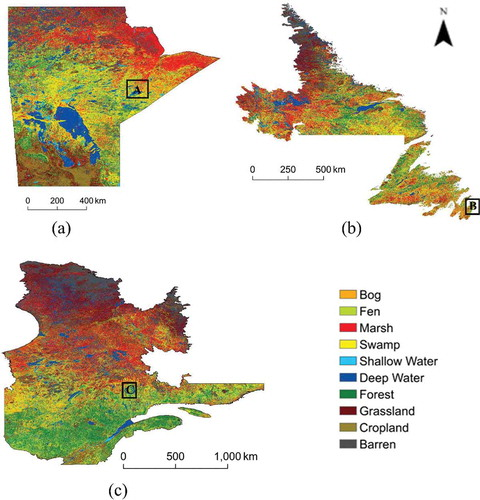
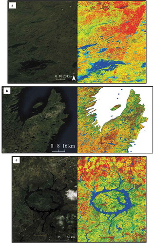
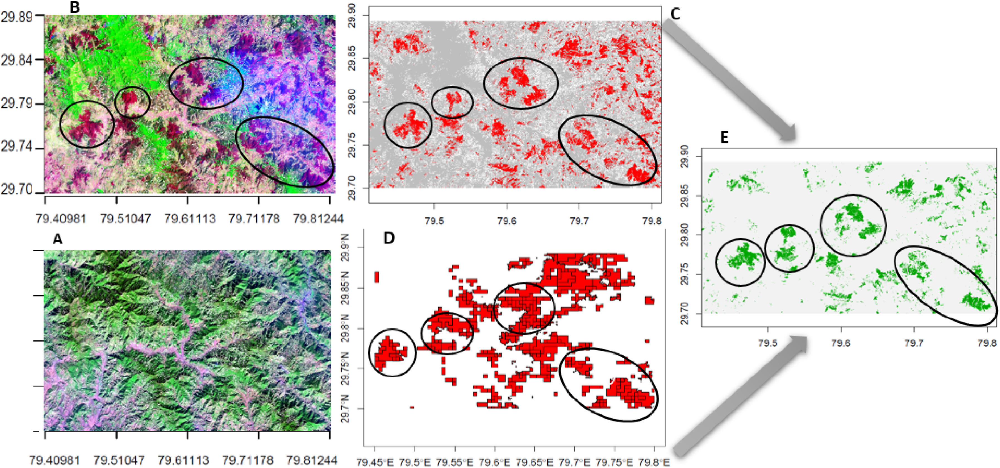

Overview
- Summary
- Application
- Reflection
6.1 Summary
6.1.1 Mind Map
6.1.2 Supervised
Decision Trees
Classification Trees:Data is classified into two or more discrete (can only have specific values) categories.
Gini impurity or information gain (based on entropy) is used to select the best features for segmentation.
Regression trees:subset the data into smaller chunks
Predicting continuous dependent variables
Overfitting problems
Bias = difference between predicted value and true value = oversimplifies model
Variance = variability of model for a given point = does not genearlise well
Cost Complexity Pruning (CCP): α is the key parameter controlling this trade-off
Smaller values of α: favour more complex trees (i.e., less pruning).
Larger values of α: favour simpler trees (i.e., more pruning).
Random Forests
Random forests construct a decision tree for each sampled dataset by randomly bootstrap drawing multiple samples from the original dataset.
At each split node of each decision tree, the algorithm randomly selects a portion of features. This randomness helps to enhance the generalisation of the model and reduce overfitting.
Each tree is built independently
Advantages
High accuracy: helps reduce model bias and variance
High generalisation ability
Able to handle high dimensional data
Cons: Poor model interpretation: the entire random forest as an integrated model is not as interpretive as a single decision tree.
Support Vector Machines (SVM)
Finding a hyperplane in a high-dimensional space to separate different categories, with the goal of maximising the distance between the boundaries of two categories while keeping the categories separated.
Logistic Regression
Often used in binary classification problems, where classification is predicted by estimating probabilities.
K-Nearest Neighbours (K-NN)
6.1.3 Unsupervised
DBSCAN (Density-Based Spatial Clustering of Applications with Noise): density-based clustering algorithm that does not require pre-labelled data.
K-mean clustering: dividing data points into K clusters in order to make points within the same cluster as close as possible to each other and points within different clusters as far away as possible.
ISODATA Algorithm (Iterative Self-Organising Data Analysis Technique Algorithm) is an iterative self-organising data analysis technique mainly used for cluster analysis. It is an extension of the K-means algorithm that allows the number of clusters to change dynamically during the clustering process.
Cluster busting: splitting large clusters containing too many strongholds (land cover)
6.1.4 Maximum Likelihood Estimation(MLE)
A method used in statistics to estimate the parameters of a model such that the probability (i.e., likelihood) that the model will produce the observed data is maximised.
Linear regression, logistic regression, etc., parameters are often estimated by maximum likelihood methods.
6.2 Application
6.2.1 Supervised
The Google Earth Engine (GEE) platform was used in both the Amani et al. (2019) and Phan, Kuch, and Lehnert (2020) studies to classify land cover using the Random Forest classifier.The Amani et al. (2019) study specifically focused on the use of GEE in the processing large geographic data and the use of machine learning algorithms to classify wetlands in three Canadian provinces. The methods section details the use of the Random Forest (RF) algorithm for supervised classification. This algorithm was chosen because RF is very efficient when dealing with large datasets and is very robust when dealing with noisy data(Amani et al. 2019; Phan, Kuch, and Lehnert 2020).


Both articles use metrics extracted from confusion matrices to assess classification accuracy, such as overall accuracy (oa), user accuracy (ua) and producer accuracy (pa). These metrics provide a standard method for assessing classification quality. The study by Amani et al. (2019) derived overall classification accuracy by generating confusion matrices for each province, with Manitoba, Quebec, and North Holland having 84, 78, and 82 per cent classification accuracy, respectively; Kappa coefficients, overall, producer, and user accuracies were computed based on the confusion matrices. Insight was gained into the classification accuracy of each category(Amani et al. 2019).
6.2.2 Unsupervised
Unsupervised clustering was combined with supervised machine learning (ML) algorithms in the Bar, Parida, and Pandey (2020) study to identify pre-monsoon forest fire patches using medium resolution optical satellite data from Landsat-8 and Sentinel-2. Unsupervised clustering was applied to a combination of differential spectral indices (dNBR, dNDVI, dNDWI, and dSWIR) to depict potential burn areas. The resulting clusters help identify burn suspected classes and collect training samples for subsequent supervised classification(Bar, Parida, and Pandey 2020).

Unsupervised classification acts as a preprocessing step that helps to narrow down the area that supervised learning algorithms need to focus on and improves the quality of the training samples. It has been shown that combining unsupervised clustering with supervised algorithms (CART, RF, SVM) on GEE can be effective in identifying burnt areas. This combination of unsupervised and supervised learning enhances the accuracy and efficiency of fire-burned trace identification, especially when dealing with large-scale and high-complexity remote sensing data (Bar, Parida, and Pandey 2020).
6.3 Reflection
During my intensive use of supervised and unsupervised classification methods to analyse remotely sensed data, I have come to appreciate the respective strengths and challenges of the two techniques. Supervised classification granted me a high degree of accuracy, especially when I had sufficient and high-quality training data. However, I also realised that this approach is extremely reliant on training data, and that accessing this data is sometimes both difficult and resource intensive. In terms of unsupervised classification, I was attracted to its ability to reveal patterns inherent in the data without preset categories. It relieves me of the labelling effort required prior to supervised learning, although this approach sometimes produces classification results that are difficult to interpret.
Combining these two approaches, I found unsupervised learning to be an excellent preprocessing step that helped me identify noteworthy data patterns and provided insights for subsequent supervised learning. This combined strategy not only enhanced the performance of the model, but also provided flexibility and depth to my work on large-scale remote sensing datasets. Through this process, I have become more aware of how critical it is to understand the data characteristics, clearly define the problem, and select the appropriate approach when working with complex remote sensing data. This experience has reinforced my commitment and ability to continually explore and adapt to new technologies to improve our understanding of remote sensing data.